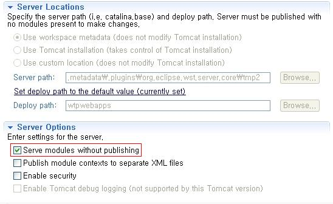

설치 규격
| 지원 운영체제 |
|
|---|---|
| 지원 HTML |
|
| 지원 웹 언어 |
|
| 지원 웹 서버 |
|
설치 방법
크로스에디터 설치가 필요한 서버에 아래의 순서에 따라 설치하십시오.
1. 서버 가이드 적용
2. 크로스에디터 전체 폴더 업로드(하위폴더 및 파일포함)
WEB, WAS서버가 분리되어 있는 경우 websource, binary 폴더는 WAS서버에 나머지 폴더는 WEB서버에 설치합니다.(WEB서버와 경로를 맞춰 WAS에 설치)
단, WEB서버와 WAS서버가 분리된 경우에는 관리자 페이지 사용이 어려우므로, manage폴더는 삭제해도 무관하며, 직접 Config.xml 파일에서 수정하거나 API를 이용하여 설정 가능합니다.
추가로 설치파일의 폴더 구조를 그대로 사용하셔야 하며, Document 와 manage 폴더를 제외한 어떠한 파일도 임의로 경로를 변경하거나 삭제하시면 정상 구동이 되지 않습니다.
3. 파일 권한 설정
아래의 경로에 해당 파일이 존재하는 경우 쓰기 권한을 추가합니다.
 관리자 설정 정보가 저장되는 파일
관리자 설정 정보가 저장되는 파일
- 크로스에디터 설치 폴더/config/xmls/Config.xml
 파일이 업로드 되는 기본 폴더
파일이 업로드 되는 기본 폴더
- 크로스에디터 설치 폴더/binary/하위폴더
- 크로스에디터 설치 폴더/websource 폴더 (웹 언어가 ASP, ASP.NET인 경우)
 관리자 페이지 계정 정보가 저장되는 파일
관리자 페이지 계정 정보가 저장되는 파일
- 크로스에디터 설치 폴더/manage/asp/manageInfo.asp
- 크로스에디터 설치 폴더/manage/php/manageInfo.php
- 크로스에디터 설치 폴더/manage/jsp/manageInfo.jsp
4. 웹 언어별 설정
ASP
IIS(인터넷 정보 서비스) 관리자 설정에서 ASP 옵션의 "부모 경로 사용"을 "true"로 변경합니다.
- 플러그인 모드 사용 시 웹루트에 bin폴더를 생성 후 System.Net.Json.dll 파일을 설치합니다.
ASP.NET
크로스에디터는 ASP.NET 버전의 관리자 페이지를 제공하지 않고 ASP 버전의 관리자를 사용합니다.
IIS(인터넷 정보 서비스) 관리자 설정에서 ASP가 동작할 수 있도록 설정해 주세요.
IIS(인터넷 정보 서비스) 관리자 설정에서 ASP 옵션의 "부모 경로 사용"을 "true"로 변경합니다.
- 플러그인 모드 사용 시 웹루트에 bin폴더를 생성 후 System.Net.Json.dll 파일을 설치합니다.
PHP
php.ini 환경설정 파일의 "allow_url_fopen"을 "on"으로 변경합니다.
JSP
WAS 서버에 JDK 버전에 맞춰 아래의 라이브러리를 설치합니다.
commons-codec.jar 파일을 설치합니다. (다운로드 사이트: http://commons.apache.org/proper/commons-codec/download_codec.cgi)
commons-fileupload.jar 파일을 설치합니다. (다운로드 사이트: http://commons.apache.org/proper/commons-fileupload/download_fileupload.cgi)
commons-io.jar 파일을 설치합니다. (다운로드 사이트: http://commons.apache.org/proper/commons-io/download_io.cgi)
참고로, 이미 WAS서버에 등록되어 있는 경우 설치할 필요가 없으며 중복설치 시 오류가 발생합니다.
- 플러그인 모드 사용 시 java-json.jar 파일을 설치합니다.
5. 바이러스 백신 설정 (부가기능)
1) 바이러스 백신은 "크로스에디터 설치 폴더/vse" 폴더에 설치가 됩니다.
만약, WEB서버와 WAS서버가 분리된 경우 WAS서버에 vse 폴더를 설치합니다.
또한, 별도의 이미지 서버로 설정하는 경우에는 바이러스 백신도 이미지 서버와 동일한 서버에 설치 되어야 동작이 가능합니다.
2) "크로스에디터 설치 폴더/websource/웹 언어(asp, asp.net, php, jsp)/VacciniePath" 파일에 vse 폴더가 설치된 물리적인 전체경로를 설정해 줍니다.
단, 해당 파일을 설정하지 않았을 경우, 제공한 폴더 경로와 동일하다고 판단하여 동작됩니다.
PHP 버전 (크로스에디터 설치 경로가 /usr/local/namo일 경우)
<?php
strVaccinePath = "/usr/local/namo/vse";
?>
[ LINUX 서버 ]
3-1) vse 폴더 안의 setup.sh 파일을 실행합니다.
/usr/local/namo/vse/setup.sh
3-2) vse 폴더 안의 scheduler를 실행합니다. (자동 업데이트를 위한 작업)
/usr/local/namo/vse/scheduler
[ WINDOWS 서버 ]
3) Namo VSE cheduler Service를 윈도우 서비스에 등록시켜 줍니다.
(1) 관리자 권한으로 cmd.exe를 실행
(2) installVSE.bat파일 경로로 이동
(3) installVSE.bat 실행
4) 백신 모듈의 패치를 위해서는 아래의 URL과 통신이 가능해야 합니다.
http://oem.avdl.ctmail.com
5) 설정 파일은 아래와 같습니다.
- vaccine.ini : 라이선스 파일
- scheduler.cfg : 업데이트 주기 설정 파일 (기본적으로 30분 업데이트 주기)
update_period=30
6. 번역 및 사전 설정 (부가기능)
번역 및 사전 기능 사용을 위해서는 아래의 URL과 통신이 가능해야 합니다.
http://platform.systran-saas.co.kr:8903/
7. 관리자 페이지 접근
크로스에디터 초기 설정을 위해 관리자 페이지에 접근합니다.
 관리자 페이지 접속 경로
관리자 페이지 접속 경로
- http://도메인정보/크로스에디터 설치 폴더/manage/index.html
 배포 시 지급된 관리자 아이디와 비밀번호로 로그인합니다.
배포 시 지급된 관리자 아이디와 비밀번호로 로그인합니다.
 WEB서버와 WAS서버가 분리된 경우에는 관리자 페이지 사용이 어려우므로, manage 폴더는 삭제해도 무관하며, 직접 Config.xml 파일에서 수정 또는 API를 이용하여 설정 가능합니다.
WEB서버와 WAS서버가 분리된 경우에는 관리자 페이지 사용이 어려우므로, manage 폴더는 삭제해도 무관하며, 직접 Config.xml 파일에서 수정 또는 API를 이용하여 설정 가능합니다.
8. 설치 확인 방법
크로스에디터 설치 폴더의 index.html을 브라우저에서 실행 시 에디터가 정상적으로 로딩되면 설치완료입니다.
단, 브라우저에서 접속 시 반드시 신청한 도메인 정보로 접속 하셔야 하며, 로컬 테스트 시에는 127.0.0.1로 테스트 하거나, 신청 도메인을 hosts 파일에 등록 후 도메인으로 접속해야 합니다.
9. 페이지에 삽입
DOCTYPE 지정
에디터를 삽입할 페이지의 상단에 문서 형식(DOCTYPE)을 지정합니다.
<!DOCTYPE html PUBLIC "-//W3C//DTD XHTML 1.1//EN" "http://www.w3.org/TR/xhtml11/DTD/xhtml11.dtd" />
※ 문서 형식을 지정하지 않으면 에디터의 UI 및 동작이 정상적이지 않을 수 있습니다.
DOCTYPE을 지정하지 못하는 경우에는 에디터를 삽입할 페이지의 상단의 head 태그 사이에 X-UA-Compatible 설정을 추가하여 문서모드를 항상 최신 버전에 맞추도록 설정합니다.
<meta http-equiv="X-UA-Compatible" content="IE=edge" />
※ 단, DOCTYPE이 선언되어 있는 경우에 <meta> 태그를 추가하면 문제가 발생할 수 있습니다.
스크립트 추가
"<head></head>" 태그 사이에 아래의 코드를 추가합니다.
<script type="text/javascript" src="크로스에디터 설치폴더URL/js/namo_scripteditor.js">
</script>
"<body>" 태그 안쪽의 에디터가 들어갈 위치에 에디터 생성 코드를 삽입합니다.
<script type="text/javascript">
var CrossEditor = new NamoSE("임의의 이름");
CrossEditor.EditorStart();
</script>
10. 이클립스에서 Server 사용 시
Server의 환경설정 페이지를 엽니다.
"Serve modules without publishing"을 체크해 주십시오.
"Serve modules without publishing"을 선택하지 않았을 경우 temp 파일을 이용하여 구동되기 때문에 실제 저장되는 경로와 동작하는 경로가 일치하지 않아 크로스에디터가 정상적으로 동작하지 않을 수 있습니다.
패치 방법
크로스에디터는 패치파일만 독립적으로 사용할 수 없습니다.
크로스에디터 패치파일을 받은 경우 아래의 방법으로 패치를 진행합니다.
- 크로스에디터 패치 파일을 크로스에디터 설치 폴더에 덮어쓰기합니다.
- 서버의 파일을 reload 할 수 없는 경우 서버를 다시 구동합니다.
- 관리자 페이지에 접속하여 로그인하면 패치가 완료됩니다.
참고로, 기존의 브라우저 정보가 남아있을 수 있으므로, 브라우저의 세션 및 쿠키 정보 삭제 후 확인해 보시기 바랍니다.
삭제 방법
크로스에디터 설치 폴더를 삭제합니다.